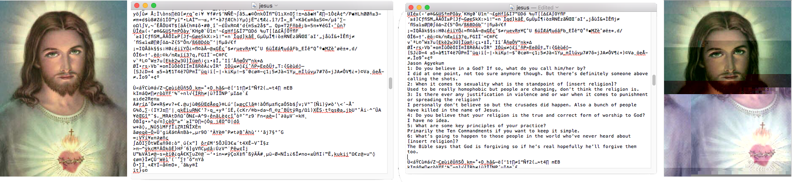
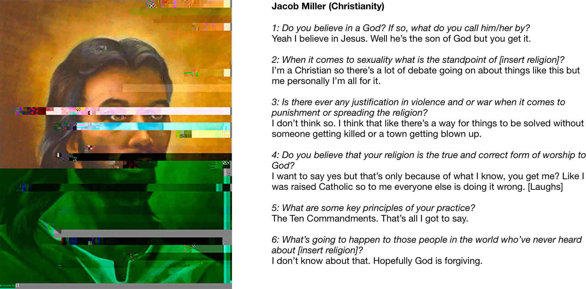
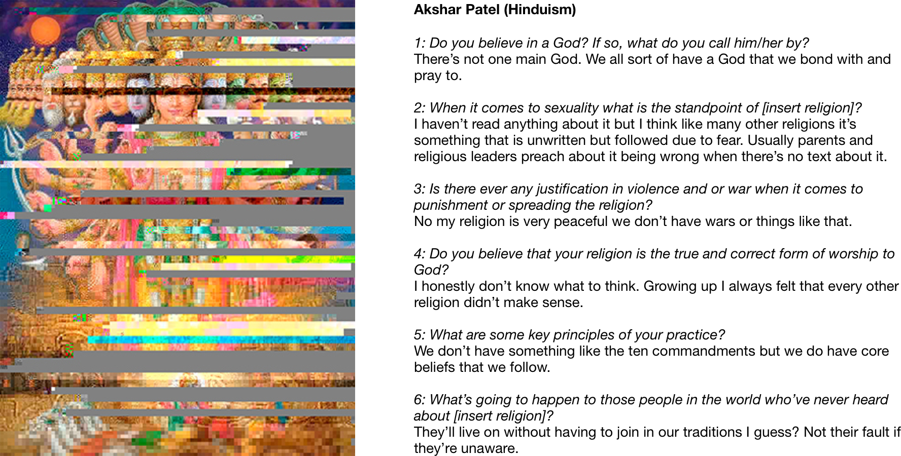
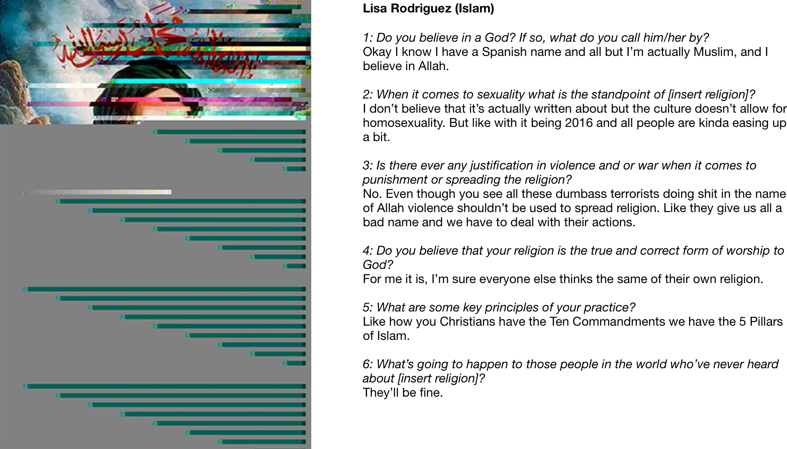
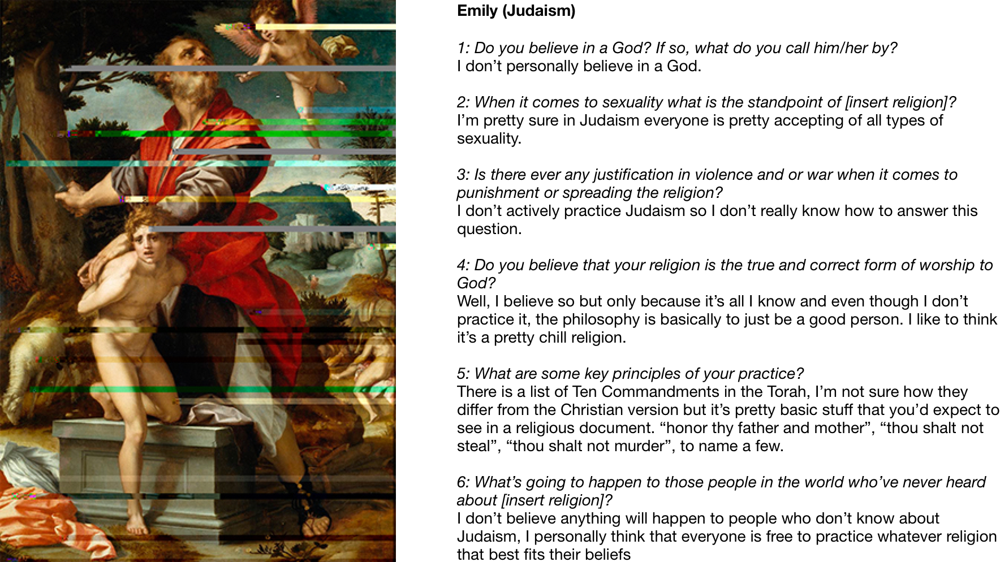

D.I.Y Religion
Overview
One of my best friends, Jamal (Mally), once spoke to me about how we all follow the same path and engage in certain social experiences depending on where we live. But, because of perspective we all experience things differently. How different is the twenty year old who just graduated with her masters from the twenty year old who attends a community college? This whole idea of following the same path and viewing things differently led my mind to religion. A construct with numerous similarities across all variations and a shared goal of peace, love, and respect for others as well as God. Yet it is the cause of millions of deaths and wars. A path with the same destination but depending on how you decide to travel your experience is either slightly or completely different.
Planning + Process
The aim of this project was to show that through our own personal views on certain issues we shape the religion to our own version. With the original image never looking the same once we’ve added our input.
I focused on the top five religions in the world and came up with some questions that I was curious about. Questions that I believe are very important when it comes to a person and their religion. I then took a photo of an important leader or figure in the religion to be the representation and the image that will get molded into the persons own image.

Once I had all the images I questioned some people from campus in the library about their religions and if they fell into an open category I asked them the questions. After I had their responses I would open the images in a text editor and then insert the questions along with their answers to alter the original image.

Results
I am currently working on the next step of this project which would allow users to visit a website, select a religion, and answer the questions to receive their own custom image and then save or share the results.
   